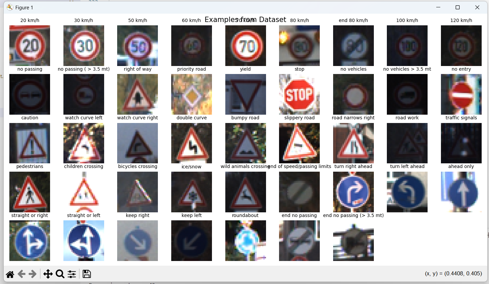
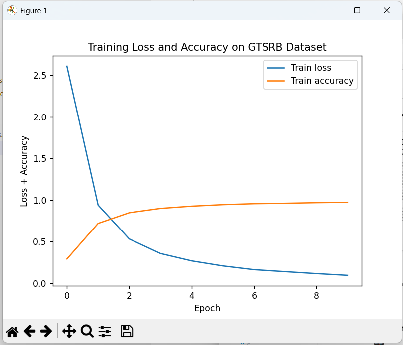
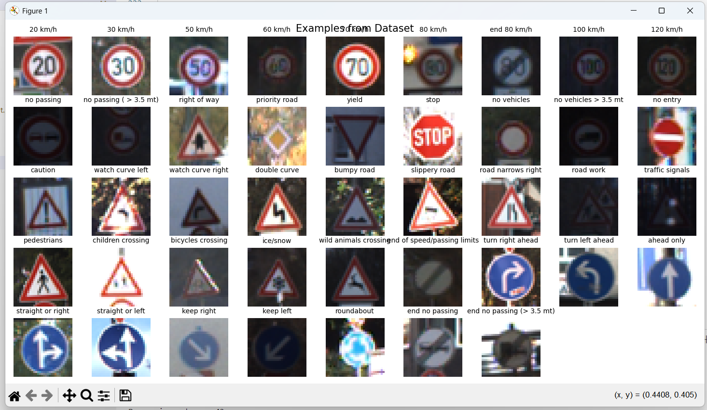
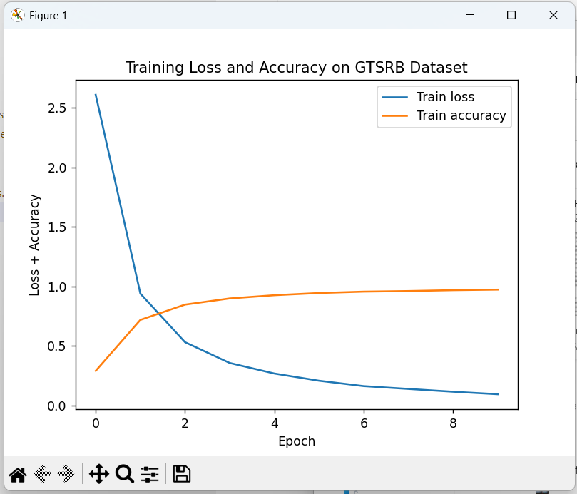

Prediction will appear here.
A Convolutional Neural Network (CNN) trained on the German Traffic Sign Recognition Benchmark (GTSRB) dataset. It is modeled after the LeNet CNN architecture and implemented using the PyTorch machine learning library. To test the model, upload an image!